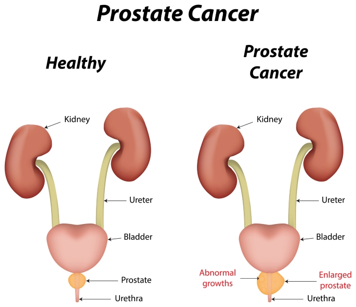

Prostate cancer is the development of cancer in the prostate,
a gland in the male reproductive system.Most prostate cancers are slow growing;
however, some grow relatively quickly.The cancer cells may spread from the
prostate to other area of the body, particularly the bones and lymph nodes.
It may initially cause no symptoms.
Early prostate cancer usually has no clear symptoms. Sometimes prostate cancer does cause symptoms,
often similar to those of diseases such as benign prostatic hyperplasia. These include frequent urination,
nocturia (increased urination at night), difficulty starting and maintaining a steady stream of urine,
hematuria (blood in the urine), and dysuria (painful urination).
Causes
The prostate is a walnut-sized exocrine gland. This means that its fluids and secretions are intended for use outside of the body.
The prostate produces the fluid that nourishes and transports sperm on their journey to fuse with a female ovum, or egg, and produce human life. The prostate contracts and forces these fluids out during orgasm.
The urethra is tube through which sperm and urine exit the body. It also passes through the prostate.

Survival Rate
The numbers below are among the most current available. But to get 5-year survival rates, doctors have to look at men who were treated at least 5 years ago.
These statistics are based on the stage of the cancer when it was first diagnosed. They don’t apply to cancers that later come back or spread.
The 5-year relative survival rate is 99%
The 10-year relative survival rate is 98%
The 15-year relative survival rate is 96%
Cancers that have spread to distant lymph nodes, bones, or other organs. The relative 5-year survival rate for distant stage prostate cancer is about 29%.